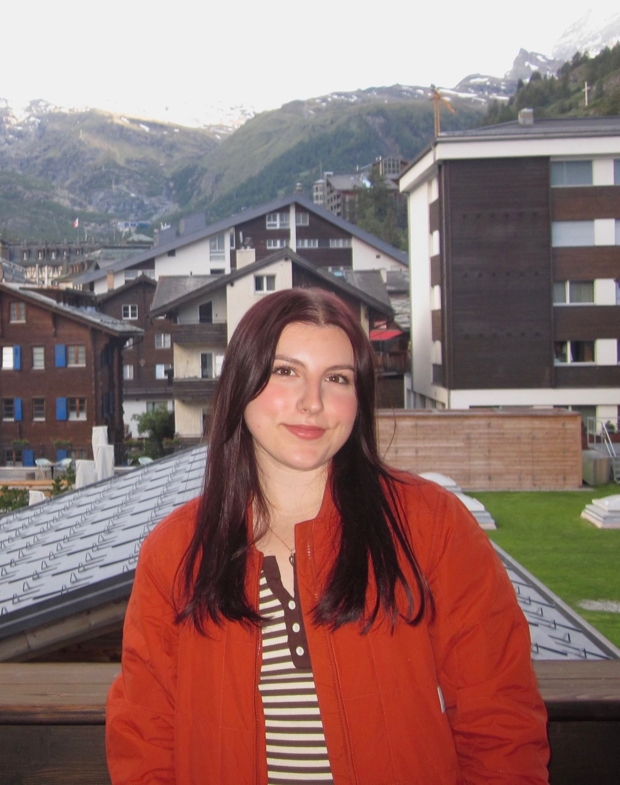
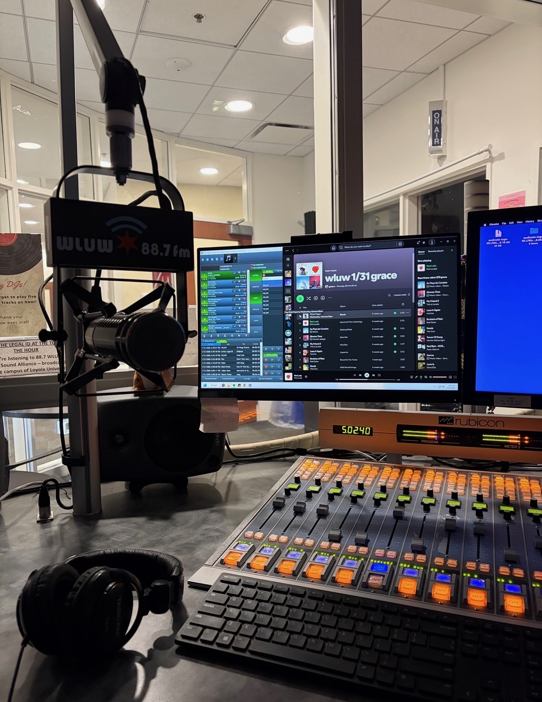
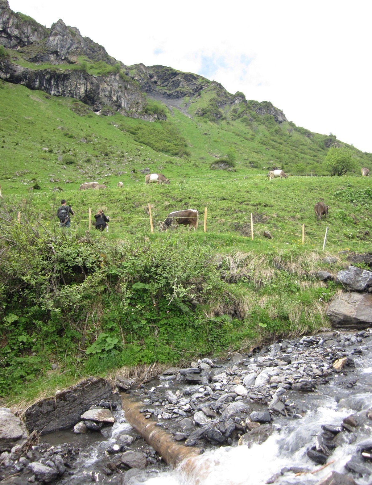

This is my dog Bruno! He's a Coton de Tulear, and he's 10 years old.

My name is Grace Romanelli. I'm 20 years old, and I’m in my third year at Loyola! I'm from Columbus, Ohio (Go Bucks), and in my free time I'm a research assistant in a memory and neuromodulatory mechanisms lab, a DJ at Loyola’s radio station, and I like to play the guitar!
This is my dog Bruno! He's a Coton de Tulear, and he's 10 years old.

Here is the DJ setup at the station! My favorite genres of music to play are indie and alternative. I've been listening to a lot of Geese, Fontaines D.C., and Love Spells recently.


I went on a hiking trip to Switzerland with my parents over the summer! This trip had been a bucket list item for me for a while, and I had such a good time!